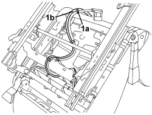
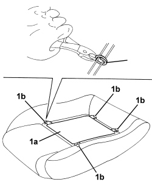
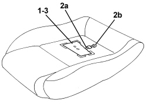
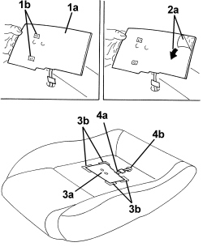

7065A34 PASSENGER PRESENCE SENSOR ON FRONT SEAT FOR INDICATING SEATBELT UNFASTENED R R
- Path
- Procedures > 70 FITTINGS > 7065 SAFETY BELTS AND ACCESSORIES > 7065A FRONT SAFETY BELTS > 7065A34 PASSENGER PRESENCE SENSOR ON FRONT SEAT FOR INDICATING SEATBELT UNFASTENED R R
- Kind
- repair procedure (removal / refitting; the operation number is the code)
- Applies to
- all engines; all production periods
- Interactive page
- https://sloeber94.github.io/elrnDB/alfa/159/en/#/939005573
Applies to: all engines; all production periods
 Removing
Removing
 Refitting
RefittingOp. 7045A10 FRONT SEAT (ONE), LEFT OR RIGHT - R.R.
1. Disconnect the retainers (1a) for the wiring (1b) for the passenger presence sensor.

Applies to: all engines; all production periods
Op. 7045A24 FRONT SEAT BACKREST ANGLE ADJUSTMENT KNOB (ONE), LEFT OR RIGHT - R.R.
Op. 7045A56 DRIVER'S SEAT HEIGHT ADJUSTMENT DEVICE CONTROL LEVER - R.R
Op. 7045A43 FRONT SEAT EXTERIOR GUARD (ONE), LEFT OR RIGHT - R.R
Op. 7045D21 FRONT SEAT CUSHION COVER, LEFT OR RIGHT - R.R. WITH SEAT REMOVED
- Separate the cover from the cushion upholstery.
- If present, remove the cushion heater pad.
1. If present, remove the carpet (1a) detaching the adhesive surface from the padding after having cut the retaining rings (1b) using clippers.

Applies to: all engines; all production periods
1. Remove the passenger presence sensor detaching the adhesive surface from the upholstery.
2. Extract the wiring (2a) for the sensor via the opening (2b).
3. Keep the passenger presence sensor.

Applies to: all engines; all production periods
Refitting
Removing- Check that the passenger presence sensor is not damaged.
1. If the sensor removed previously is being reused, apply spray glue for plastics to the adhesive area (1a) after having fitted protection for the sensors (1b).
2. If a new sensor is being used, remove the protective film (2a) from the adhesive section.
3. Place the sensor (3a) in position centering it on the references (3b).
Stick the adhesive section of the heater pad to the upholstery.
4. Insert the wiring (4a) in the housing (4b).

Applies to: all engines; all production periods
- If the carpet has been removed, apply spray glue for plastics to the adhesive area, then place it on the padding and stick the adhesive section to the actual padding.
Fit the rings retaining the carpet to the padding using special pliers.
- If removed, refit the cushion heater pad.
- Connect the cover to the cushion upholstery.
Op. 7045D21 FRONT SEAT CUSHION COVER, LEFT OR RIGHT - R.R. WITH SEAT REMOVED
Op. 7045A43 FRONT SEAT EXTERIOR GUARD (ONE), LEFT OR RIGHT - R.R
Op. 7045A56 DRIVER'S SEAT HEIGHT ADJUSTMENT DEVICE CONTROL LEVER - R.R
Op. 7045A24 FRONT SEAT BACKREST ANGLE ADJUSTMENT KNOB (ONE), LEFT OR RIGHT - R.R.
- Connect the retainers for the wiring for the passenger presence sensor.
Op. 7045A10 FRONT SEAT (ONE), LEFT OR RIGHT - R.R.
- Use an Examiner to check that the system has not acquired errors during the operation.
Topics linked from this page (6)
- 7045A10 FRONT SEAT (ONE), LEFT OR RIGHT - R.R.
- 7045A24 FRONT SEAT BACKREST ANGLE ADJUSTMENT KNOB (ONE), LEFT OR RIGHT - R.R.
- 7045A43 FRONT SEAT EXTERIOR GUARD (ONE), LEFT OR RIGHT - R.R
- 7045A56 DRIVER'S SEAT HEIGHT ADJUSTMENT DEVICE CONTROL LEVER - R.R
- 7045D21 FRONT SEAT CUSHION COVER, LEFT OR RIGHT - R.R. WITH SEAT REMOVED
- 7045M22 HEATER PAD FOR FRONT SEAT CUSHION, LEFT OR RIGHT - R.R. FOLLOWING ELECTRICAL CIRCUIT CHECK